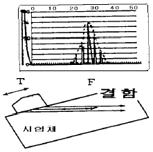
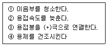

초음파비파괴검사산업기사(구) (2004-03-07 기출문제)
1과목: 초음파탐상시험원리
1. 여러 종류의 비파괴검사의 특이성에 대해 기술한 것이다. 올바른 것은?
- 방사선투과시험에서는 접착 구조재의 접착불량부분의 검출은 불가능하다.
- 초음파탐상시험은 구조물을 가열했을 때에 생기는 표면온도분포를 이용하는 방법이다.
- 광탄성시험법은 구조물을 가열했을 때 생기는 변위에 관계한 간섭파를 관찰하여 결함을 판정하는 방법이다.
- 음향방출시험은 재료가 파괴되는 과정에 미세한 균열의 발생에 수반하는 응력파를 검출하고 파괴예지나 방지에 이용되는 방법이다.
(정답률: 알수없음)

2. 강재에 대한 굴절각이 60도인 경사각 탐촉자로 회주철을 검사할 때의 굴절각은 몇 도인가? (단, 강재에서의 횡파 속도는 3,200m/sec, 탐촉자 쐐기 재질의 종파속도는 2,800m/sec이고, 회주철에서의 횡파속도는 2,400m/sec이다.)
- 약 40도
- 약 49도
- 약 55도
- 약 70도
(정답률: 알수없음)
3. 불감대 영역(Dead Zone)이란?
- 근거리 음장내에 있는 탐상불능 영역
- 빔 분산의 외측 영역
- 송신펄스와 저면에코 사이의 영역
- 원거리 음장과 근거리 음장 사이의 영역
(정답률: 알수없음)
4. 초음파탐상시험에서 초음파의 반사와 지향성 특성에 대해 기술한 것이다. 올바른 것은?
- 초음파는 결함이나 시험체 단면(端面) 또는 이종금속의 접합면과 같은 경계면에서는 계면 두물질의 전기저항에 의해 정해지는 어떤 비율로 반사한다.
- 진동자와 시험체와의 사이에 공기가 있는 경우에 초음파는 거의 100% 통과하여 시험체 중에 전달된다.
- 평면형의 반사원에서 반사파의 크기는 반사면의 방향성에 큰 영향을 받으며, 결함의 치수가 크면 초음파는 잘 반사하고 그 반사의 정도는 결함의 치수에 영향을 받지 않는다.
- 블로홀과 같은 구형의 반사원에서는 여러 방향으로 반사되기 때문에 큰 결함에코를 얻기가 어렵다.
(정답률: 알수없음)
5. 초음파탐상시험을 위한 접촉매질 선택시 주의해야 할 사항이 아닌 것은?
- 접촉매질은 접촉표면 사이의 공기를 제거할 수 있어야 한다.
- 접촉매질의 재료는 고체 입자 또는 기포가 없어야 한다.
- 접촉매질은 시험편 표면 및 탐촉자에 해를 주지 말아야 한다.
- 접촉매질은 잘 마르며 두꺼운 막으로 형성되어 있어야 한다.
(정답률: 알수없음)
6. 근거리음장내에서 초음파탐상시험을 수행할 때 주의해야 할 사항이 아닌 것은?
- 허용된 크기의 불연속이 CRT상에 불합격이 될 크기의 시그날이 될 수 있다.
- 불합격이 될 불연속으로부터의 시그날이 허용될 크기의 시그날로 나타날 수 있다.
- 불연속로부터의 시그날이 완전히 소실될 수 있다.
- 결함의 정량적 평가가 가능하다.
(정답률: 알수없음)
7. 공진법에서 기본 공진이 일어나는 시험체의 두께는?
- 송신 초음파 파장의 1/2일 때
- 송신 초음파 파장과 같을 때
- 송신 초음파 파장의 1/4일 때
- 송신 초음파 파장의 2배일 때
(정답률: 알수없음)
8. 비파괴검사에 사용되는 용어 중 재료의 물리적 조직이 이어지지 않은 것을 나타내는 용어는?
- 흠(flaw)
- 결함(defect)
- 불연속(discontinuity)
- 균열(crack)
(정답률: 알수없음)
9. 초음파 빔의 반사각은?
- 입사각과 같다.
- 사용되는 접촉매질에 관계된다.
- 사용 주파수에 관계된다.
- 굴절각과 같다.
(정답률: 알수없음)
10. 초음파의 파장이 1mm이고 진동자의 직경이 10mm인 탐촉자로 강재를 초음파탐상시 발생하는 근거리음장은 몇 mm인가？(단, 강재내에서 초음파의 속도는 5000m/sec로 가정)
- 0.25
- 2.5
- 25
- 250
(정답률: 알수없음)
11. 각종 비파괴검사의 특징에 대해 기술한 것으로 올바른 것은?
- 스트레인측정은 금속에만 적용할 수 있는 시험방법이다.
- 초음파탐상시험은 압력용기의 수위레벨을 검지하는것에 적합한 시험방법이다.
- 자분탐상시험은 섬유강화 복합재료의 접촉 불량부분을 검출하는데 적합하다.
- 초음파탐상시험은 오스테나이트계 스테인레스강의 비드중에 내재하고 있는 미세한 균열을 검출하는데 적합한 시험방법이다.
(정답률: 알수없음)
12. 동일조건으로 검사하여 금속내부의 원형평면 결함의 결함지시가 다음 중 가장 큰 것은?
- 결함 면적 3mm2이고, 검사체 표면으로부터 10㎜지점
- 결함 면적 6mm2이고, 검사체 표면으로부터 20㎜지점
- 결함 면적 9mm2이고, 검사체 표면으로부터 30㎜지점
- 결함 면적 12mm2이고, 검사체 표면으로부터 40㎜지점
(정답률: 알수없음)
13. 주파수 5MHz, 진동자 직경 12mm의 탐촉자로 강재를 검사할 때 초음파 빔의 분산각은? (단, 강재에서의 음속은 6,000㎧이다.)
- 약 7°
- 약 15°
- 약 20°
- 약 25°
(정답률: 알수없음)
14. 보통의 경우 경사각 탐촉자에 아크릴 수지의 쐐기를 사용하는데 아크릴 수지를 사용하는 이유가 아닌 것은?
- 감쇠가 적다.
- 음향 임피던스 값이 크다.
- 가공성이 좋다.
- 음속이 적절하다.
(정답률: 알수없음)
15. 와전류탐상시험에서 시험주파수 선정시 고려해야할 사항으로 틀린 것은?
- 표피 효과
- 코일임피던스 특성
- 프로브의 속도
- 프로브의 형태
(정답률: 알수없음)
16. 음파의 성질을 설명한 것 중 틀린 것은?
- 음파는 전파에 비해 진행속도가 느리다.
- 음파는 전파에 비해 파장이 길다.
- 음파는 진공 중에서 진행할 수 있다.
- 전파는 진공 중에서도 진행할 수 있다.
(정답률: 알수없음)
17. 근거리 음장의 길이에 영향을 주는 것만으로 짝지은 것은?
- 탐촉자의 직경 및 주파수, 음속
- 탐촉자의 직경, 음속, 접촉매질의 음향 임피던스
- 탐촉자의 주파수 및 각도, 접촉매질의 음향 임피던스
- 탐촉자의 직경 및 각도, 음속
(정답률: 알수없음)
18. 초음파탐상시험과 관련하여 표면파에 대한 설명 중 맞는 것은?
- 재질의 전 두께에 걸쳐 진행하며 Lamb파라고도 한다.
- 약 한 파장 정도의 깊이를 투과하며 횡파 속도의 90%를 갖는다.
- 진동양식에 따라 대칭형과 비대칭형으로 나뉜다.
- 재질내 속도는 판두께 및 주파수에 의한다.
(정답률: 알수없음)
19. 초음파탐상시험의 탐상방법에 대한 설명 중 올바른 것은?
- 초음파탐상기 눈금판의 횡축은 초음파빔의 전파거리, 종축은 에코높이를 표시한다.
- 초음파탐상도형에 있어서 결함에코의 발생 위치로 부터 결함의 치수를 안다.
- 결함위치는 결함을 겨냥하는 방향을 바꾸어 에코높이의 변화 모양으로부터 추정할 수 있다.
- 재료 중에서 초음파의 음속은 다중반사에 의한 저면에코 높이의 저하 비율로부터 측정할 수 있다.
(정답률: 알수없음)
20. 초음파탐상시 그 결과에 대한 표시방법중 초음파의 진행시간과 반사량을 화면의 가로와 세로 축에 표시하는 방법은?
- A-Scan
- B-Scan
- C-Scan
- D-Scan
(정답률: 알수없음)
2과목: 초음파탐상검사
21. 점집속(line focus type) 탐촉자가 갖는 특유한 성능에 해당하지 않는 것은?
- 집속거리
- 집속범위
- 집속표면에코레벨
- 집속빔 폭
(정답률: 알수없음)
22. 초음파 탐상장치 중 스크린의 측정범위를 확대하거나 축소시키는 장치는?
- Sweep delay 조절장치
- Sweep length 조절장치
- Gain 조절장치
- Attenuator 조절장치
(정답률: 알수없음)
23. 두께가 같은 2개의 판재를 수직탐상하니 한 개는 저면에 코의 다중반사 회수가 많이 나왔고, 다른 한 개는 겨우수 회만 나왔다. 다음 중 후자의 재료는? (단, 탐상조건은 양편이 똑같고, 에코높이의 현저한 변화는 없었다.)
- 음속이 느린 재료
- 결정입자가 미세한 재료
- 감쇠의 크기가 큰 재료
- 라미네이션이 있는 재료
(정답률: 알수없음)
24. 표준시험편 V15-1.4에서 얻은 에코의 높이가 V15-4에서 얻은 에코의 높이와 같게 하려면 약 몇 dB을 높여야 하는가?
- 6dB
- 12dB
- 18dB
- 24dB
(정답률: 알수없음)
25. 수침법으로 초음파탐상시험을 할 경우 집속탐촉자를 사용하는 경우가 있다. 이 탐촉자에 대한 서술 중 틀린 것은?
- 작은 불연속에 대하여 감도가 증가됨
- 거칠은 표면검사시 효과 감소
- 금속잡음의 감소
- 분해능 감소
(정답률: 알수없음)
26. 용접부의 경사각탐상에 대한 기술로서 올바른 설명은?
- 기공이 가장 검출하기 쉽다.
- 비드에서의 에코는 결함에코보다 항상 작게 나타나기 때문에 무시해도 좋다.
- 동일 탐상면에서 탐상하면 모든 용접부의 결함은 1회 반사법보다 직사법이 에코높이가 높게 나타난다.
- 탠덤법은 X 개선의 용입불량이나 I 개선의 융합불량의 검출에 적합하다.
(정답률: 알수없음)
27. 기본적인 초음파 펄스반사법 장치중에서 시간축을 만들어내는 부분은?
- 스위프(sweep)회로
- 수신기
- 펄스기(pulser)
- 동조기(synchronizer)
(정답률: 알수없음)
28. 그림의 탐상도형 표시방법에 대해 기술한 것이다. 올바른 것은?

- MA-scope
- 단면표시(B-scope)
- 기본표시(A-scope)
- 평면표시(C-scope)
(정답률: 알수없음)
29. 전기적인 에너지를 기계적인 에너지로, 기계적인 에너지를 전기적인 에너지로 변환시킬 수 있는 재료의 특성을 무엇이라 하는가?
- 초전도효과
- 홀효과
- 압전효과
- 바크하우젠효과
(정답률: 알수없음)
30. 시험체의 두께 방향으로 결함의 모양을 표현하는 초음파탐상 방법을 무엇이라 하는가?
- A-스캔
- B-스캔
- C-스캔
- MA-스캔
(정답률: 알수없음)
31. 용접부의 경사각탐상에서 결함위치를 측정하는 경우에 대한 설명중 올바른 것은?
- 경사각탐상에서는 결함위치를 최대 에코높이가 얻어졌을 때의 탐촉자 용접부거리, 빔진행거리 및 굴절각의 관계로부터 구한다.
- 경사각탐상에는 결함위치를 빔진행거리가 가장 짧게 얻어졌을 때의 빔진행거리와 굴절각과의 관계로부터 구한다.
- 경사각탐상에는 결함위치를 탐촉자 용접부거리와 굴절각과의 관계로부터 구한다.
- 경사각탐상에서 결함위치는 입사점과 굴절각으로부터 계산에 의해 구한다.
(정답률: 알수없음)
32. 초음파 탐상기에서 시간의 주어진 주기에 의해 발생되는 펄스의 수를 무엇이라고 하는가?
- 기기의 주파수
- 기기의 펄스 회복시간
- 기기의 펄스길이
- 기기의 펄스 반복주파수
(정답률: 알수없음)
33. 동일한 크기의 결함이 있는 경우, 초음파탐상시험에 의하여 가장 발견하기 쉬운 결함은?
- 시험재 내부에 있는 구(球)형의 결함
- 초음파의 진행방향에 평행인 흠
- 초음파의 진행방향에 수직인 흠
- 이종물질의 혼입
(정답률: 알수없음)
34. 수침법에서 경사진 시험편을 검사할 때 시편은 어떻게 놓아야 하는가?
- 전체에 걸쳐 수위가 일정하도록 한다.
- 물의 길이가 최대가 되도록 한다.
- 표면에서 입사각이 15° 가 되도록 탐촉자를 고정시킨다.
- 표면에서 입사각이 5° 가 되도록 탐촉자를 고정시킨다.
(정답률: 알수없음)
35. 초음파 탐상장치 수신부의 구성요소가 아닌 것은?
- 증폭부
- 감쇠기
- 측정범위
- 필터
(정답률: 알수없음)
36. 일반적으로 횡파를 이용한 초음파탐상은 주로 어떤 경우에 가장 많이 사용되는가?
- 용접부, 튜브 또는 배관의 결함을 검출하는데 사용
- 금속 재료의 탄성 이방성을 결정하는데 사용
- 두꺼운 판재의 면상 결함을 검출하는데 사용
- 얇은 판재의 두께를 측정하는데 사용
(정답률: 알수없음)
37. 다음 투과법에 대한 설명 중 틀린 것은?
- 사용되는 탐촉자는 송신용과 수신용으로 2개를 사용한다.
- 초음파 펄스를 투과시킨 후 반사된 것을 수신하여 재료를 평가한다.
- 투과 도중 발생된 음파의 손실 양으로 재료를 평가한다.
- 한개의 탐촉자로는 투과법을 적용할 수 없다.
(정답률: 알수없음)
38. 판상 결함(Lamination)검출에 관한 설명 중 틀린 것은?
- 결함에코와 저면에코를 상대적으로 비교한다.
- 결함에코와 저면에코를 비교할 경우 탐상면과 반대면에 평행할수록 좋다.
- 저면에코 없이 결함에코만 나오면 결함이 상대적으로 큰 경우이다.
- 저면에코가 수반되지 않는 결함에코는 결함크기 판정이 어렵다.
(정답률: 알수없음)
39. 시험체의 두께 측정에 가장 널리 사용되는 검사 방법은?
- 2 탐촉자법
- 표면파 탐상법
- 공진법
- 경사각 탐상법
(정답률: 알수없음)
40. 판재의 용접부에서 융합선(Fusion Line)을 따라 존재하는 불연속의 검출에 일반적이고 가장 효과적인 방법은?
- 표면파를 이용한 경사각 접촉법
- 종파를 이용한 수직 접촉법
- 표면파를 이용한 수침법
- 횡파를 사용한 경사각법
(정답률: 알수없음)
3과목: 초음파탐상관련규격 및 컴퓨터활용
41. KS규격에 따라 두께 50mm 강용접부의 초음파탐상시 초음파가 통과하는 모재부분을 수직탐상할 때 탐상감도는?
- 건전부 밑면 에코 높이가 80% 되게 한다.
- 건전부 밑면 에코 높이가 50% 되게 한다.
- 건전부의 제2회 밑면 에코 높이가 80% 되게 한다.
- 건전부의 제2회 밑면 에코 높이가 50% 되게 한다.
(정답률: 알수없음)
42. KS B 0896에서 규정하는 맞대기이음 용접탐상시 굴절각선택에 대한 것중 옳지 않은 것은?
- 판두께 40㎜ 이하일 때는 70° 또는 60° 를 사용한다.
- 판두께 40 - 60㎜일 때는 70° 또는 60° 를 사용한다.
- 판두께 60㎜을 넘는 것은 70° 와 45° 를 병용한다.
- 판두께 60㎜을 넘는 것은 60° 와 45° 를 병용한다.
(정답률: 알수없음)
43. ASME Sec.V, Art.5에 따르면 수동검사시 최대 주사속도는?
- 3인치/초
- 6인치/초
- 8인치/초
- 10인치/초
(정답률: 알수없음)
44. ASME Sev.V, Art.5에 따라 주조품(Castings)를 초음파탐상검사할 때 수직탐촉자를 사용하고, 특수한 경우에는 경사각탐촉자를 추가로 사용한다. 특수한 경우란?
- 주조품의 재질이 알루미늄일 때
- 사용주파수가 0.5 MHz일 때
- 주조품의 전면과 후면과의 각도가 15° 를 넘을 때
- 자동 DAC 장치를 사용할 때
(정답률: 알수없음)
45. KS D 0040에서 수동탐상시 2MHz 탐촉자를 사용하였다. 대비시험편 RB-RA를 사용하여 측정한 원거리 분해능의 요구값은?
- 9mm이하
- 5mm이하
- 7mm이하
- 3mm이하
(정답률: 알수없음)
46. KS D 0233에서 압력용기용 강판의 초음파탐상검사를 수직법에 의한 펄스반사법으로 탐상하고자 할 때 수직탐촉자로 검사할 대상이 아닌 강판 두께는?
- 10㎜
- 20㎜
- 30㎜
- 60㎜
(정답률: 알수없음)
47. 사용자가 internet.abc.ac.kr과 같은 주소로 입력한 주소를 원래의 주소 210.110.224.114로 바꿔주는 역할을 하는 서버를 무엇이라 하는가?
- Proxy 서버
- SMTP 서버
- DNS 서버
- Web 서버
(정답률: 알수없음)
48. KS B 0896에서 권고하고 있는 요구사항으로서 경사각 탐촉자의 주파수와 탐촉자의 치수가 적당하지 않는 것은?
- 2 MHz, 20x20mm
- 2 MHz, 14x14mm
- 5 MHz, 10x10mm
- 5 MHZ, 20x20mm
(정답률: 알수없음)
49. 다음 중 인터넷 관련 전자우편 표준통신 규약은?
- PPP
- SMTP
- UDP
- ARP
(정답률: 알수없음)
50. KS B 0896에 따라서 탐촉자를 접촉시키는 부분의 판 두께가 100mm인 맞대기 용접부를 주파수 2MHz, 진동자 치수 20x20mm의 탐촉자를 사용하여 경사각탐상할 때, 흠의 지시 길이를 측정하는 내용 중 맞는 것은?
- 좌우주사하여 에코높이가 L선을 넘는 탐촉자이동거리
- 좌우주사하여 에코높이가 M선을 넘는 탐촉자이동거리
- 좌우주사하여 에코높이가 H선을 넘는 탐촉자이동거리
- 좌우주사하여 에코높이가 최대에코 높이의 1/2(-6㏈)을 넘는 탐촉자 이동거리
(정답률: 알수없음)
51. 인터넷에서 사용되는 도메인 중 기관 도메인 이름이 잘못된 것은?
- ac : 교육기관
- co : 상업적 기관
- go : 정부기관
- or : 연구기관
(정답률: 알수없음)
52. KS B 0817에 따른 초음파탐상 장치의 성능 점검에 해당되지 않는 것은?
- 수시 점검
- 일상 점검
- 정기 점검
- 특별 점검
(정답률: 알수없음)
53. ASME Sev.V, Art.5에 따라 볼트재(Bolting Material)를 축방향(Axial Scan) 초음파탐상검사할 때 검사방법이 아닌 것은?
- 수직탐촉자를 사용한다.
- 경사각탐촉자를 사용한다.
- 직접접촉법을 사용한다.
- 수침법을 사용한다.
(정답률: 알수없음)
54. ASME Sec.V, Art.5에 따르면 탐촉자를 주사(Scanning)할 때 진동자의 크기에 최소 몇 %이상 중첩하여 주사하는가?
- 5%
- 10%
- 20%
- 50%
(정답률: 알수없음)
55. ASME Sev.V, SA-388(대형 단강품에 대한 초음파탐상시험의 표준)에 따라 저면반사기법(Back-Reflection Technique)으로 수직탐상 중에 재교정(Recalibration)을 실시하였더니 게인(gain) 레벨이 15% 증가하였다. 어떤 조치를 취하여야 하는가?
- 재교정전에 실시한 부분은 다시 재검사한다.
- 재교정전에 실시한 부분 중 흠으로 기록된 부분만 재평가한다.
- 기준보다 높은 레벨이므로 재교정전에 실시한 부분은 재검사하지 않는다.
- 감독관과 협의한다.
(정답률: 알수없음)
56. 다음 중 네트워크 상의 컴퓨터가 가동되는지를 알아보는 명령은?
- ftp
- telnet
- finger
- ping
(정답률: 알수없음)
57. 캐시(cache)에 대한 설명이 아닌 것은?
- 자주 사용하는 데이터나 소프트웨어 명령어들의 저장 장소이다.
- 작고 매우 빠른 메모리이다.
- 데이터와 명령어들의 전송속도 향상을 위한 목적을 가진다.
- 신용크기 정도의 반영구적인 보조기억장치이다.
(정답률: 알수없음)
58. STB-G 표준시험편 가운데 V3 시험편이 의미하는 것은?
- 탐상면에서 30㎜의 위치에 직경 2㎜의 평저공 저면이 있다.
- 탐상면에서 30㎜의 위치에 직경 3㎜의 평저공 저면이 있다.
- 시험편의 최대 길이가 50㎜이고 바닥으로부터 30㎜의 위치에 직경 2㎜의 평저공 저면이 있다.
- 시험편의 최대 길이가 50㎜이고 바닥으로부터 30㎜의 위치에 직경 3㎜의 평저공 저면이 있다.
(정답률: 알수없음)
59. KS B ⑤36에 의한 초음파 펄스 반사법에서 두께 측정방식의 종류에 해당되지 않는 것은?
- 수중 에코방식
- 0점, 제1회 저면 에코방식
- 다중 에코방식
- 표면에코, 제1회 저면 에코방식
(정답률: 알수없음)
60. ASME Sec.Ⅴ, Art.5에 따라 초음파 탐상장치의 스크린 높이 직선성 및 증폭직선성을 주기적으로 검사하는 기간은? (단, 연속적으로 사용치 않음)
- 8시간
- 30일
- 3개월
- 6개월
(정답률: 알수없음)
4과목: 금속재료 및 용접일반
61. 테르밋 용접의 설명으로 가장 적합한 것은?
- 원자수소의 발열을 이용한 것이다.
- 전기용접법과 가스용접법을 결합한 방식이다.
- 액체산소를 이용한 가스용접법의 일종이다.
- 산화철과 알루미늄의 반응열을 이용한 용접이다.
(정답률: 알수없음)
62. TIG 용접에서 전류의 극성에 대한 설명중 직류 역극성의 특징이라 할 수 있는 것은?
- 용입이 깊다
- 비드폭이 좁다
- 청정작용이 있다
- 전극의 과열이 적다
(정답률: 알수없음)
63. 수동 아크용접기는 모두 수하특성인 동시에 정전류 특성으로 설계된 이유를 설명한 중 가장 적합한 것은?
- 아크길이가 변할 때 아크전류의 변동이 크기 때문에
- 아크길이가 변할 때 아크전압의 변동이 크기 때문에
- 아크길이가 변할 때 아크전류의 변동이 적기 때문에
- 아크길이가 변할 때 아크전압의 변동이 적기 때문에
(정답률: 알수없음)
64. CO2 용접기를 사용, 용착금속 2Okgf을 용착속도 4 kgf/hr, 아크타임(Arc time) 50%로 용접할 경우 용접작업시간은?
- 5 시간
- 10 시간
- 20 시간
- 40 시간
(정답률: 알수없음)
65. 저항용접 분류 중 맞대기 저항용접의 종류가 아닌 것은?
- 업셋 용접
- 플래시 용접
- 스폿 용접
- 퍼커션 용접
(정답률: 알수없음)
66. 페라이트와 탄화물이 서로 층상으로 배치된 조직으로 현미경조직은 흑백으로 된 파상선을 형성하고 있는 것은?
- 오스테나이트
- 펄라이트
- 레데브라이트
- 마텐자이트
(정답률: 알수없음)
67. 다음 중 용접부에 대한 설명으로서 옳은 것은?
- 열영향부(HAZ:heat affected zone)는 경화되고 연성이 저하되며 응력 집중으로 인해 균열되기 쉽다.
- 수소량은 용접부의 연성저하 및 균열 발생에 영향을 미치지 못한다.
- 열영향부 부근은 노치 인성(notch toughness)의 상승으로 균열이 일어나게 된다.
- 수소량이 적어지면 용접부에서의 연성이 저하가 심해진다.
(정답률: 알수없음)
68. 다음 중 용접 변형의 기본변형 3가지에 속하지 않는 것은?
- 각 변화
- 가로수축
- 원형수축
- 세로수축
(정답률: 알수없음)
69. 다음 보기의 사항은 아크용접에서 어떤 용접 결함에 대한 대책이다. 다음 중 가장 관계가 깊은 결함은?

- 기공(blow hole)
- 슬래그 혼입
- 균열(crack)
- 언더 컷
(정답률: 알수없음)
70. 소결함유 베어링제조의 소결 공정이 맞는 것은?
- 혼합 → 재압축 → 예비소결 → 원료 → 본소결
- 본소결 → 혼합 → 가압성형 → 원료 →재압축
- 원료 → 혼합 → 가압성형 → 예비소결 → 본소결
- 가압성형 → 예비소결 → 혼합 → 원료 → 압축
(정답률: 알수없음)
71. 장신구, 무기, 불상, 범종 등의 재료로 사용되어 왔으며 임진왜란시 거북선 포신으로 사용된 Cu-Sn 합금은?
- 청동
- 황동
- 양은
- 톰백
(정답률: 알수없음)
72. 상온에서 구리(Cu)의 결정격자는?
- 정방형 격자
- 조밀육방 격자
- 면심입방 격자
- 체심입방 격자
(정답률: 알수없음)
73. 주철을 A1 변태에서 가열 냉각을 반복하였을 때 체적팽창이 심화되어 치수의 변화 및 균열이 일어나는 현상은?
- 백선화 현상
- 주철의 성장 현상
- 시효경화 현상
- 스테다이트현상
(정답률: 알수없음)
74. 다음 중 경금속이 아닌 것은?
- Aℓ
- Mg
- Be
- Ni
(정답률: 알수없음)
75. 비정질합금의 제조방법이 아닌 것은?
- 고압압축법
- 스파터(sputter)법
- 용탕 급냉법
- 롤 급냉법
(정답률: 알수없음)
76. 금속의 일반적인 공통적 성질 중 틀린 것은?
- 열 및 전기의 양도체이다.
- 금속 특유의 광택이 있다.
- 수은 이외에는 상온에서 고체이다.
- 강도, 경도 및 비중이 작고 투명하다.
(정답률: 알수없음)
77. 금속간 화합물 Fe3C에서 C의 원자비는?
- 75%
- 25%
- 18%
- 8%
(정답률: 알수없음)
78. 금속결정에서 전위(dislocation)의 생성과정에 속하지 않는 것은?
- 칼날전위
- 나사전위
- 혼합전위
- 탄성전위
(정답률: 알수없음)
79. 피복 아크 용접봉의 피복제에 습기가 흡습 되었을 경우 가장 많이 발생되는 용접 결함은?
- 언더컷이 발생한다.
- 기공이 발생한다
- 슬랙의 량이 많아진다.
- 크랙이 발생한다
(정답률: 알수없음)
80. 다음 중 탄산가스 아크 용접법에서 비용극식인 것은?
- 탄소 아크법
- 솔리드 와이어법
- 퓨즈 아크법
- 솔리드 와이어 혼합 가스법
(정답률: 알수없음)
음향방출시험은 재료 내부에서 미세한 균열이 발생할 때 응력파가 발생하게 되는데, 이를 검출하여 파괴예지나 방지에 이용하는 방법이다. 이는 비파괴검사 중에서도 파손검사에 해당하며, 재료의 내부 결함을 검출하는 데에 매우 유용하다.